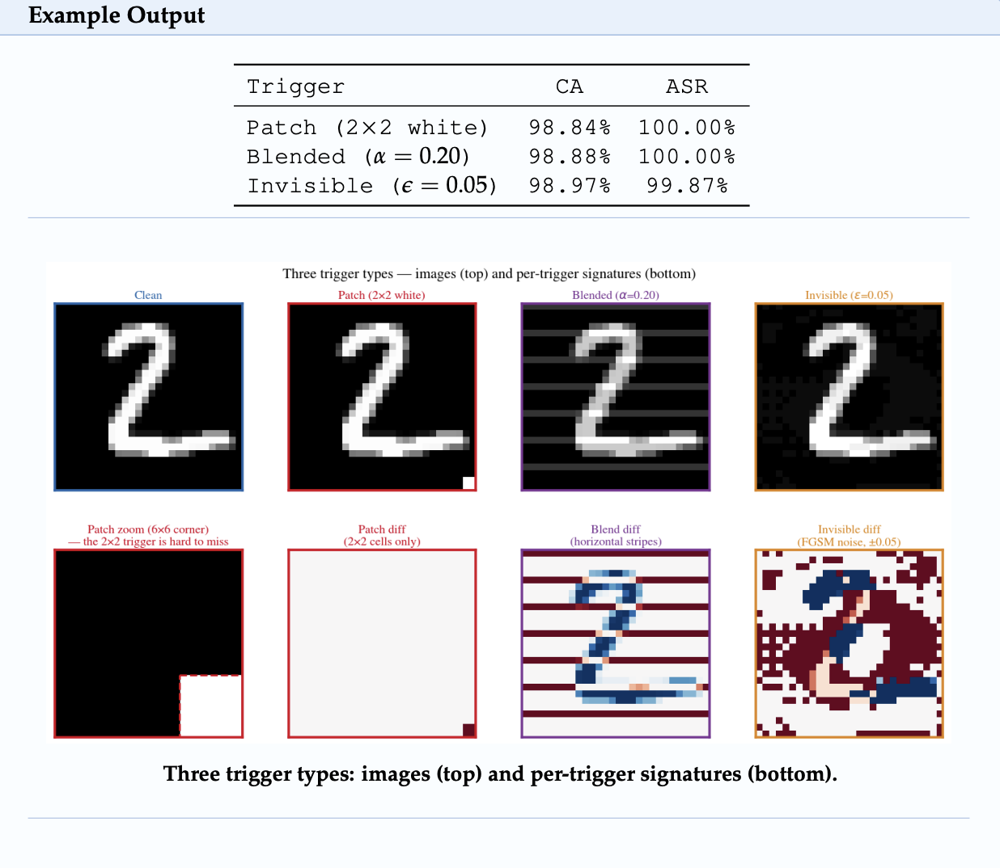
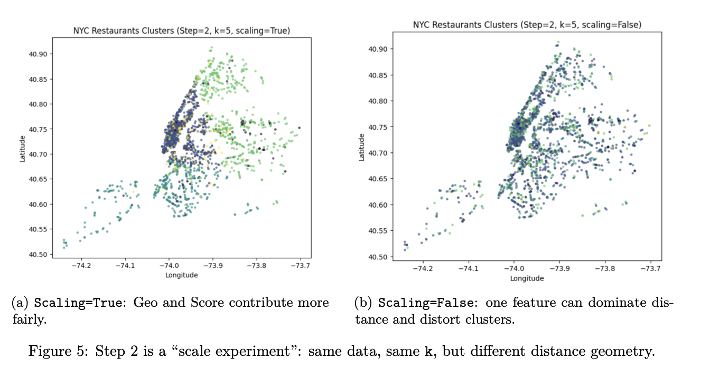

Dive into my Research
Research Organization
My research is conducted through Eureka Labs, an initiative dedicated to making cybersecurity and AI education accessible to everyone. The project centers around hands-on lab activities that walk learners through real-world scenarios, helping them build practical skills alongside theoretical understanding.
Goal
Cybersecurity and AI are two of the most critical fields in technology today, yet many students and educators lack access to high-quality, hands-on learning materials that make these complex topics approachable. My research addresses this gap by contributing to the development of inquiry-based lab activities that make security education freely accessible to learners at every skill level.
What Have I Done
I reviewed and contributed to a series of cybersecurity and AI/ML labs, gaining hands-on experience with various machine learning attack types including adversarial attacks, backdoor attacks, data poisoning, model inversion, and membership inference, learning not only how to execute each attack but also how to detect and mitigate them. I then expanded into broader ML topics such as PCA, clustering, and regression. After building this technical foundation, I went back through the labs and made editorial improvements, including adding a "Why Does This Matter" section to each lab that connects the technical content to real-world cybersecurity implications.
Topics Covered
Over the course of my research I reviewed and contributed to 13 labs covering a range of cybersecurity and AI/ML topics including:
- Adversarial attacks and defenses
- Data poisoning and defenses
- Backdoor attacks and defenses
- Model inversion attacks and defenses
- Membership inference attacks and defenses
- K-means clustering
- Logistic regression
- Feature scaling
- Convolutional Neural Networks (CNNs)
- Linear regression
- Principal Component Analysis (PCA)
- Support Vector Machines (SVMs)
- Data cleaning and missing value reconstruction
Lab Examples
Backdoor Attack
A demonstration of a backdoor attack on a deep neural network, where a hidden trigger is embedded into the
model during training, causing it to misclassify any input containing that trigger while behaving normally
on clean data.

Clustering with K-Means
An example of K-means clustering applied to a real dataset, grouping data points into clusters based on
similarity. This lab demonstrates how unsupervised learning can reveal hidden patterns and structure within
data without the need for labeled examples.

Skills Gained
- Python (running and analyzing ML models)
- Machine learning concepts (clustering, regression, PCA, SVMs, CNNs)
- Cybersecurity concepts such as adversarial attacks, backdoor attacks, data poisoning, model inversion, and membership inference.
- Technical writing and documentation
- Literature review and research synthesis
- AI/ML security and defense strategies
- Curriculum development and educational content creation
What's Next
My research will be expanding into the intersection of cybersecurity and Retrieval-Augmented Generation (RAG) systems, exploring how RAG pipelines can be vulnerable to attacks and how those vulnerabilities can be defended against, and building on my existing foundation in both cybersecurity and AI/ML.